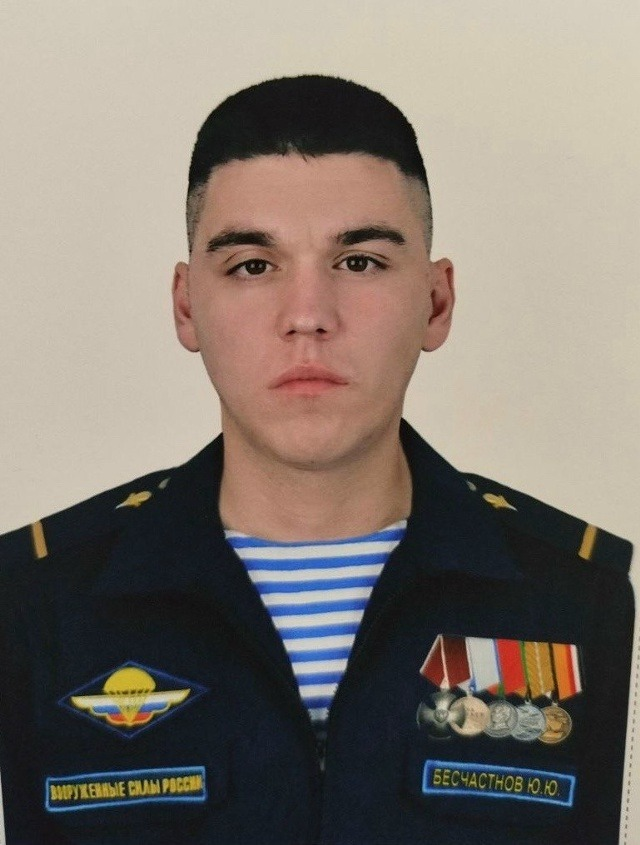
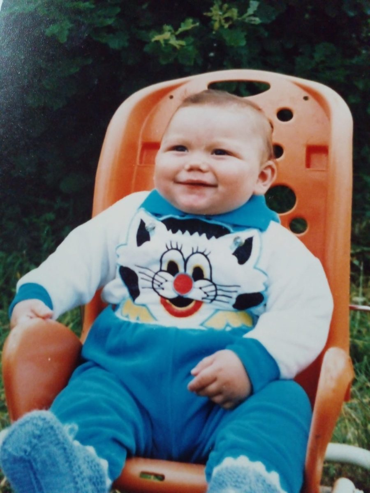
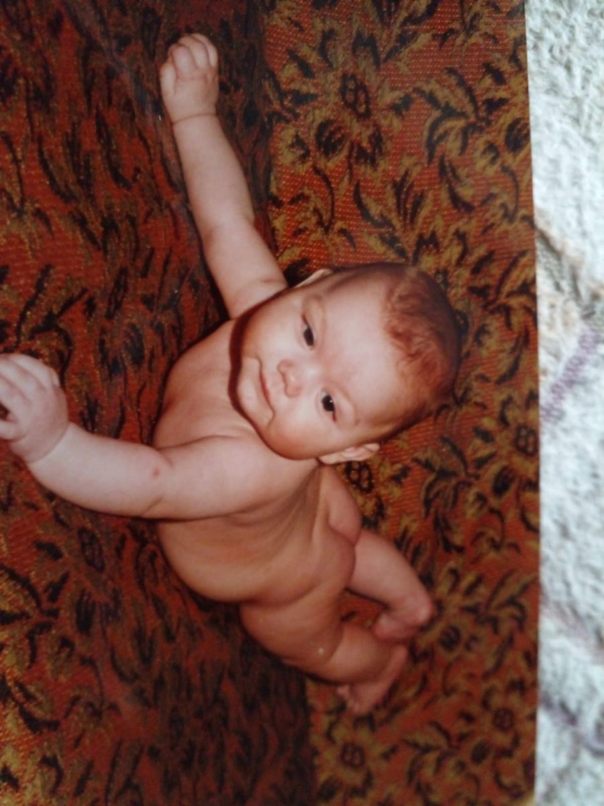
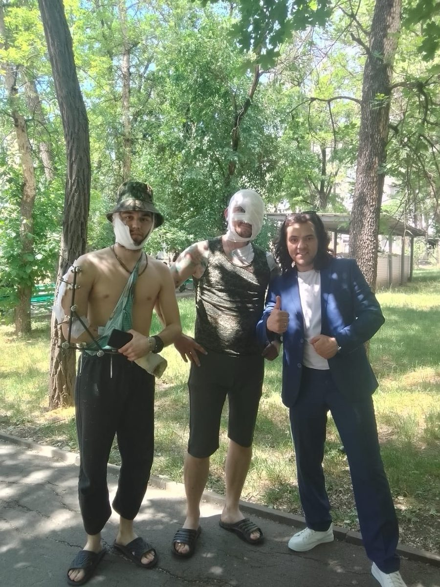
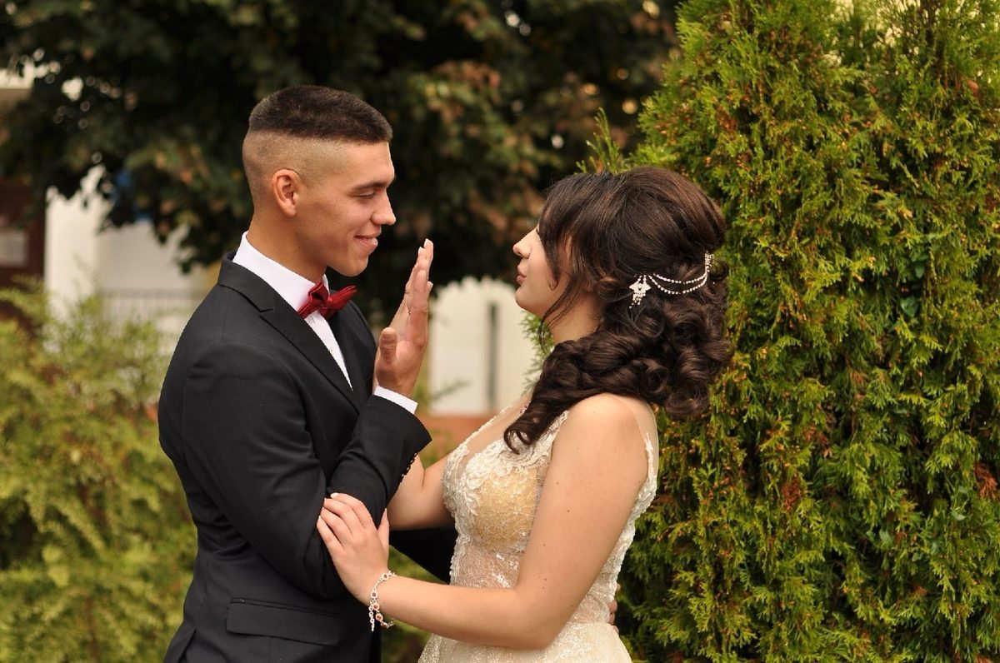
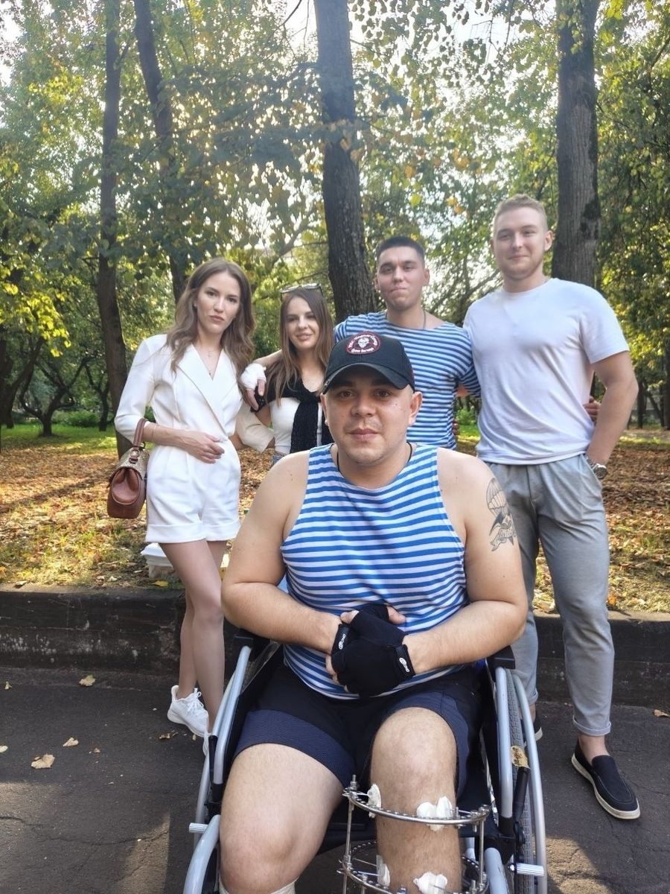
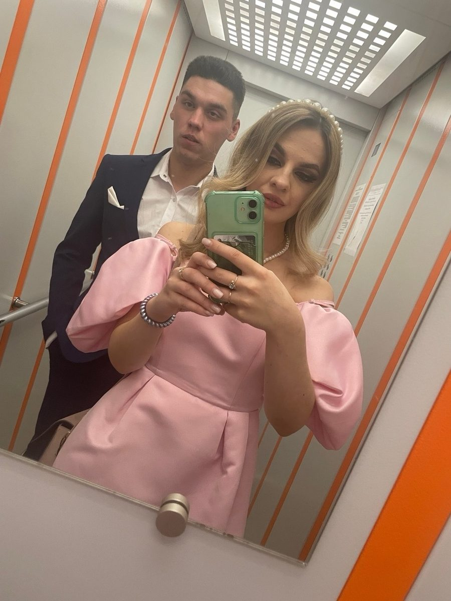

Книга Памяти
Юрий Юрьевич Бесчастнов
Нажмите на страницу, чтобы открыть

01.11.1995 — 22.01.2026
«Родина и семья — на первом месте»
Юрий Юрьевич Бесчастнов
Нажмите на страницу, чтобы открыть
Юра родился 1 ноября 1995 года в деревне Шубино. Его семья в 1989 году бежала из Узбекистана из-за погромов, бросив всё. Вскоре Юра пошёл в первый класс школы №5 г. Углича. Он был скромным: 1 сентября от волнения убежал из класса, но учителя нашли его и посадили за первую парту, сделав знаменитым с первого дня. Юра учился в МЧС-классе, занимался шахматами, футболом, борьбой, а в сочинениях писал о доброте, дружбе и животных.

Позже Юрий поступил в университет г. Дубна на геофизику. Студенчество было ярким: в 2014 году их направили на практику в Крым, где они застали историческое воссоединение и смотрели матчи чемпионата мира на берегу моря. Другую практику он проходил в Ярославле, став единственным мужчиной в женском коллективе архива Кольской скважины. По окончании практики Юру очень не хотели отпускать.

В университете Юра встретил тренера Эрика Душанова, открыв для себя гиревой спорт. За 5 лет тренировок он взял 3-е место в Московской области, почти выполнил КМС (не хватило 3 подтягиваний) и однажды мужественно выступал на соревнованиях с вывихом плеча. Также была история на спор в Крыму, когда Юра, мгновенно собравшись с мыслями, отжался более 150 раз.

В 2018 году Юрий окончил вуз без единой тройки и сам пошел в военкомат, выбрав Воздушно-десантные войска (ВДВ). В 2020 году прошёл командировку в Сирии, получив боевую медаль. 20 сентября 2020 года Юрий встретил Ксению, в 2021 году они поженились, а 29 апреля 2025 года родился их долгожданный сын Артём. Счастливое отцовство стало лучшим периодом его жизни.

С самого начала СВО Юрий воевал на передовой в пехоте. Он обладал нереальной храбростью. Получил три ранения: два тяжелых (в грудь и руку) и одно легкое (в поясницу). После ранения в руку перенёс тяжелые операции в госпитале им. Бурденко, лишился безымянного пальца. После лечения перевёлся в дивизию в Иваново оператором БПЛА и вернулся на фронт.

В сентябре 2025 года контракт подписал старший брат Никита. Юрий очень сильно переживал за брата. Извещение о гибели Никиты стало тяжелейшим ударом. 22 января 2026 года Юрий ушёл на боевое задание. Его последним сообщением жене стали слова любви. В тот день он геройски погиб, оставаясь верным долгу до конца.

Семья Бесчастновых была вынуждена спешно покинуть Узбекистан из-за Ферганских погромов и роста национализма. Родители Юрия, бросив дом и работу, с двумя маленькими детьми на руках сели ночью на товарный поезд и уехали в Ярославскую область, чтобы начать жизнь с чистого листа.
Юра пошёл в первый класс школы №5 г. Углича. Скромный мальчик прославился в первый же день, случайно сбежав с урока от волнения. Позже он учился в профильном МЧС-классе, занимался шахматами, футболом и борьбой, проявляя доброту и ответственность.
Поступив в университет г. Дубна на геофизику, Юрий поехал на практику в Крым. Это время запомнилось ему на всю жизнь — теплое море, присоединение полуострова к России и просмотр матчей чемпионата мира по футболу прямо на берегу.
Познакомившись с тренером Эриком Душановым, Юрий начал упорно заниматься гирями. За 5 лет он взял бронзу на чемпионате Московской области, почти сдал на КМС и однажды выступил до конца на соревнованиях с тяжелым вывихом плеча.
Юрий окончил университет без троек, получив диплом геофизика. Понимая важность долга перед страной, он принял твердое решение служить Родине, пришел в военкомат и выбрал Воздушно-десантные войска (ВДВ).
В ходе военной службы Юрий прошёл полугодовую командировку в Сирийской Арабской Республике. Вместе с товарищами он мужественно выполнял задачи, нёс службу на постах и выезжал в рейды, за что был награждён медалью участника операции.
Юрий женился на Ксении после красивого и заботливого ухаживания. Юра оберегал супругу от любых забот, часто повторяя, что женщины созданы для радости, а не для тяжестей.
Во время прыжка с парашютом с борта самолёта Ил-76 Юрий случайно потерял часы в бескрайнем поле, выдёргивая кольцо. Чудесным образом его товарищ, приземлившийся позже, наткнулся на эти часы в густой траве.
На передовых позициях СВО товарищ подарил Юрию свою личную каску, которая до этого спасла ему жизнь при обстреле. Зная, что служба в пехоте у «Дяди Юры» намного опаснее, друг отдал шлем как символ фронтового братства.
Юрий получил три ранения. После осколочного ранения в грудь в сентябре 2023 года он восстанавливался в Анапе. В марте 2024 года он отказался от эвакуации после ранения в поясницу. В мае 2024 года он получил тяжелейшие ранения руки, лица и головы. После года операций в госпитале им. Бурденко он лишился пальца, но твёрдо решил вернуться в строй.
В семье Бесчастновых рождается сын Артём. Юрий стал счастливым отцом, заботливо ухаживал за малышом и строил большие планы на мирную жизнь в новой квартире.
Переведясь в дивизию в Иваново на БПЛА, Юрий снова отправился на фронт, переживая за своего старшего брата Никиту. Утром 22 января Юрий отправил жене прощальное сообщение со словами любви, ушёл на боевой выход и героически погиб.
«Юрген обладал нереальной смелостью, терпеливостью и храбростью. Он неоднократно штурмовал опорные пункты врага, никогда не хвастался и не восхвалял себя, вел себя сдержанно и скромно. До сих пор не могу поверить, что его нет...»
«Юра всегда красиво ухаживал: цветы, подарки, никогда не давал носить тяжелые пакеты. Он говорил, что женщины не созданы для тяжестей. Наш сын Тёмка будет расти и гордиться своим отцом-героем, который пошел защищать нашу Родину.»